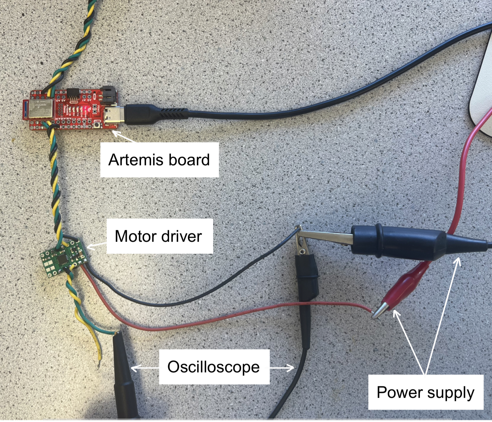
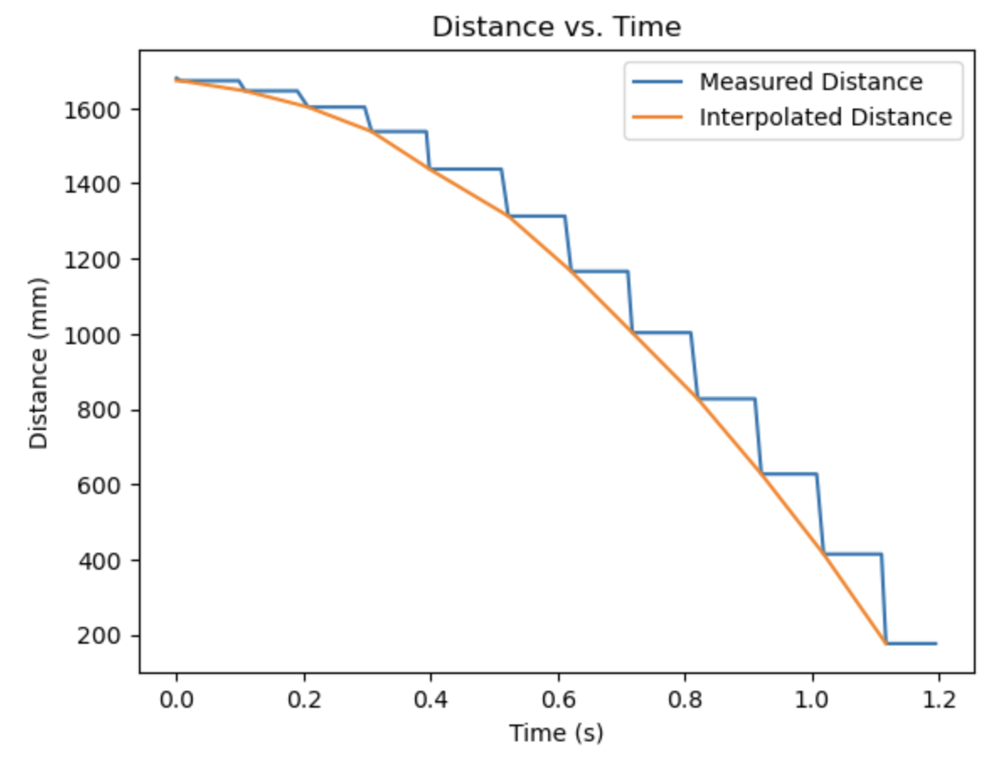
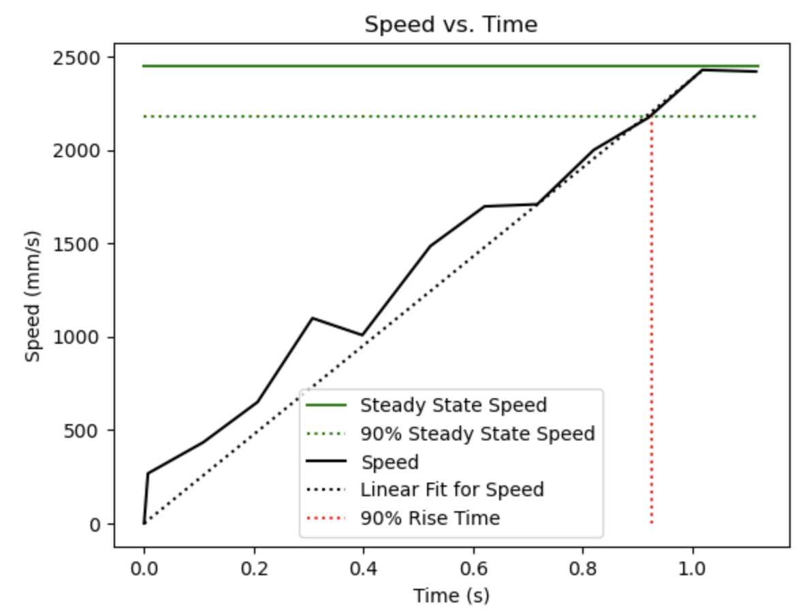
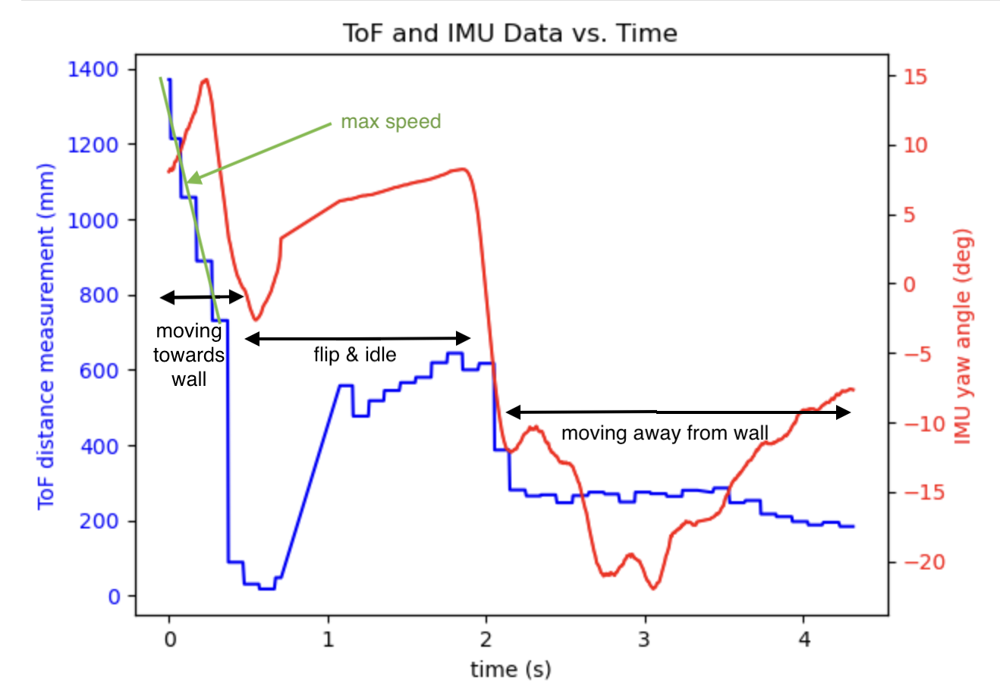

Yueming Liu
MAE 5190: Fast Robots
I am an MEng Student in Mechanical Engineering at Cornell University, please check out my main website here!
I am an MEng Student in Mechanical Engineering at Cornell University, please check out my main website here!
The goal of this lab is to set up the Arduino IDE for the Artemis board, and connect the board to the laptop with Bluetooth and Jupyter Lab notebook.
For the prelab, I updated my Arduino IDE to the lastest version and installed the Sparkfun Appollo3 boards manager in the IDE.
To test the basic connectivity of the board, I ran the example script File->Examples->01.Basics
To test the serial monitor functionality, I set the baud rate of the board and the serial monitor to 115200 and ran the example script File->Examples->Apollo3->Example4_Serial. I was able to see the output when I reset the board.
To test temperature sensor on the boad and the analog read functionality, I ran the example script File->Examples->Apollo3->Example2_analogRead. I was able to change the temperature output (the second colomn) by touching the sensor with my fingers.
To test microphone on the boad, I ran the example script File->Examples->PDM->Example1_MicrophoneOutput. I played an audio clip with an increasing pitch and the board correctly outputted the increasing frequencies.
I programmed the board to blink the LED when I play a musical "C" note, and off otherwise.
For the prelab, I first installed venv.
python3 -m pip install --user virtualenvI created a Python virtual environement under my project directory and activated it.
python3 -m venv FastRobots_ble
source FastRobots_ble/bin/activateI then installed all the necessary packages.
pip install numpy pyyaml colorama nest_asyncio bleak jupyterlabAfter that I was able to start the Jupyter server in my project directory.
Jupyter labIn connections.yaml, I replaced the artemis_address value with the MAC address printed by my Artemis in the prelab.
artemis_address: 'c0:81:85:26:a3:64'I then generated a new UUID for my Artemis board,
from uuid import uuid4
uuid4()and used this UUID for my BLE_UUID_TEST_SERVICE in ble_arduino.ino and for my ble_service in connections.yaml.
For the ECHO command, the Artemis board receives a string message from the computer, augments the string, and sends it back to the computer.
On the Artemis board side:
case ECHO:
char char_arr[MAX_MSG_SIZE];
// Extract the next value from the command string as a character array
success = robot_cmd.get_next_value(char_arr);
if (!success)
return;
tx_estring_value.clear();
tx_estring_value.append("Robot says -> ");
tx_estring_value.append(char_arr);
tx_estring_value.append(" :)");
tx_characteristic_string.writeValue(tx_estring_value.c_str());
break;On the Computer side:
ble.send_command(CMD.ECHO, "hey")
s = ble.receive_string(ble.uuid['RX_STRING'])
print(s)Output from the Jupyter notebook:
Robot says -> hey :)The SEND_THREE_FLOATS command sends three floats to the Artemis board, and the board extracts and prints the three float values.
On the Artemis board side:
case SEND_THREE_FLOATS:
float float1, float2, float3;
// Extract the next value from the command string as an integer
success = robot_cmd.get_next_value(float1);
if (!success)
return;
// Extract the next value from the command string as an integer
success = robot_cmd.get_next_value(float2);
if (!success)
return;
success = robot_cmd.get_next_value(float3);
if (!success)
return;
Serial.print("Three floats: ");
Serial.print(float1);
Serial.print(", ");
Serial.print(float2);
Serial.print(", ");
Serial.println(float3);
break;On the Computer side:
ble.send_command(CMD.SEND_THREE_FLOATS, "1.0| 2.0| 3.0")Output from the Serial Monitor:
Three floats: 1.00, 2.00, 3.00The GET_TIME_MILLIS command makes the robot reply with a string with the value of current time in milliseconds.
On the Artemis board side:
case GET_TIME_MILLIS:{
unsigned long timeMillis = millis();
char buffer[20];
itoa(timeMillis, buffer, 10);
tx_estring_value.clear();
tx_estring_value.append(buffer);
tx_characteristic_string.writeValue(tx_estring_value.c_str());
}break;On the Computer side:
ble.send_command(CMD.GET_TIME_MILLIS, "")
s = ble.receive_string(ble.uuid['RX_STRING'])
print(s)Output from the Jupyter notebook:
43749When we are unsure about when we receive data from the Artemis board, it is important to set up a notification handler instead of directly calling ble.receive_string(ble.uuid['RX_STRING']).
Nothing to be done on the Artemis board side. On the Computer side:
def notification_handler(uuid, notification):
s = ble.bytearray_to_string(notification)
print("Time: " + s)
ble.start_notify(ble.uuid['RX_STRING'], notification_handler)
ble.send_command(CMD.GET_TIME_MILLIS, "")Output from the Jupyter notebook:
Time: 43959Similar to GET_TIME_MILLIS command, GET_TIME_LOOP gets the current time in milliseconds and sends it to the laptop to be received and processed by the notification handler.
On the Artemis board side:
case GET_TIME_LOOP:{
int num_notify = 30;
for (int i = 0; i < num_notify; i++) {
unsigned long timeMillis = millis();
char buffer[20];
itoa(timeMillis, buffer, 10);
tx_estring_value.clear();
tx_estring_value.append(buffer);
tx_characteristic_string.writeValue(tx_estring_value.c_str());
Serial.println("Sent current time.");
}
}break;On the Computer side:
time = []
def notification_handler_loop(uuid, notification):
s = ble.bytearray_to_string(notification)
time.append(s)
ble.start_notify(ble.uuid['RX_STRING'], notification_handler_loop)
ble.send_command(CMD.GET_TIME_LOOP, "")
print(time)Output from the Jupyter notebook:
['165447', '165449', '165450', '165452', '165481']The board sent 5 messages (4 bytes each) in 165481ms - 165447ms = 34ms, so the effective data transfer rate is 5*4/34*1000 = 588 bytes per second.
The SEND_TIME_DATA command is similar to GET_TIME_LOOP, but stores the times in an array before start sending them.
On the Artemis board side, first define numTimeStamps and the array timeStamps, and then:
case SEND_TIME_DATA:{
int c = 0;
while(true){
timeStamps[c] = (int) millis();
c++;
if(c > numTimeStamps-1){
break;
}
}
for (int i = 0; i < numTimeStamps; i++) {
tx_estring_value.clear();
tx_estring_value.append(timeStamps[i]);
tx_characteristic_string.writeValue(tx_estring_value.c_str());
}
}break;On the Computer side, similar to last step but change the command to:
ble.send_command(CMD.SEND_TIME_DATA, "")Output from the Jupyter notebook was an array of size numTimeStamps.
In addition to getting the time stamp, read temperature at each time stamp.
On the Artemis board side:
case GET_TEMP_READINGS:{
int c = 0;
while(true){
timeStamps[c] = (int) millis();
tempReadings[c] = getTempDegF();
c++;
if(c > numTimeStamps-1){
break;
}
}
for (int i = 0; i < numTimeStamps; i++) {
tx_estring_value.clear();
tx_estring_value.append("Time: ");
tx_estring_value.append(timeStamps[i]);
tx_estring_value.append(", Temp (F): ");
tx_estring_value.append(tempReadings[i]);
tx_characteristic_string.writeValue(tx_estring_value.c_str());
}
}break;On the Computer side, similar to last step but change the command to:
ble.send_command(CMD.GET_TEMP_READINGS, "")Output from the Jupyter notebook was an array of size numTimeStamps with the time stamps and the corresponding temperature readings.
The first method sends the data live, which makes debuggin quick and easy with the data streaming. We are not worried about running out of space on the Artemis board as the data is not being stored there. The rate in which it records and sends data, however, is limited because it needs alternate between these two tasks. Some data might also get lost in this process.
The second method stores all the data on the board and transmits it at some later time. It is significantly faster than the first one since it does not need to transmit data while also recording it. However, we need to be considerate about the storage space on board. The Artemis board has 384 kB of RAM. If each datapoint is 4 bytes, then it runs out of space after 96000 datapoints.
We are insterested in the data rate with respect to the size of the packets. In order to find this relation, we can command the board to send a series of packets of different sizes to the computer, and record the difference between the send time and receive time of each packete. Here the ECHO command returns exactly the message sent:
packet = []
time_send = []
time_receive = []
data_size = []
def notification_handler_packet(uuid, notification):
packet.append(ble.bytearray_to_string(notification))
ble.start_notify(ble.uuid['RX_STRING'], notification_handler_packet)
for bytes in range(5, 125, 5):
data_size.append(bytes)
packet = []
time_send.append(time.time())
ble.send_command(CMD.ECHO, "a"*bytes)
while not packet:
time_receive.append(time.time())Output from the Jupyter notebook is shown below. The datarate increases linearly with respect to the packet size, indicating that short packets introduce significant overhead, whereas big packets helps with amortization.

After experimenting with sending a large number of messages at a high rate from the Artemis board to the computer, the communication appears to be reasonably reliable, and all the data published from the board was received by the computer.
In this lab I learned about the BLE communication scheme and its restrictions, which is going to be very useful in the future labs when we need to send data from the robot to the computer. I was initially struggling with understanding the BLE code structure but was able to make good progress after reading the documentation.
The goal of this lab is to characterize and test the Inertial Measurement Unit (IMU).
I installed the necessary library for the ICM 20948 Inertial Measurement Unit (IMU), connected the IMU to the Artemis board with a QWIIC connector as shown below, and ran the first example in the ICM-20948 Library which prints the IMU measurements. The AD0_VAL is the value of the last bit of the I2C address. Since my ADR jumper is open, the AD0_VAL should be default to 1.

I included start-up blink in the example code as shown in the video. The accelerometer readings do not change significantly when I rotate the sensor around the z-axis slowly; It changes when I accelerate, flip, or rotate the sensor around a different axis. The Gyroscope readings do not change significantly when I linearly accelerate or slowly rotate the sensor. It changes when I flip or rotate the sensor quickly.
I used the equations from class to convert the accelerometer data into pitch and roll.
pitch_a = atan2(myICM.accY(),myICM.accZ())*180/M_PI;
roll_a = atan2(myICM.accX(),myICM.accZ())*180/M_PI;The picture below shows the output from the Serial Monitor at {-90, 0, 90} degrees pitch and roll. The accelerometer is fairly accurate, with error bound within +/-0.5 degree. Therefore I do not think a two-point calibration is needed for this sensor:

Once the IMU sensors is mounted on the car, it will receive a lot of noise from the environement. In order to filter out some of the noises, we need to first apply Fourier Transform to the raw data, and from the Fourier Transform we can find a cutoff frequency that separate the noise from the useful information. We can then implement a low pass filter (LPF) with this cutoff frequency to clean up the raw data. The following plots show the raw data from some test runs and the Fourier Transforms of the pitch and roll readings from the accelerometer:


As shown in the FFT plots above, there is a peak of noise at around 50Hz for both pitch and roll data, and 10Hz appears to be a good cut-off frequency in this case, although this number is subject to change after the sensor is mounted on the robot. The implementation of the low pass filter and the results are shown below. After applying the filter, the data preserves the overall trend but is much less noisy:
fc = 10
T = (time_a[-1] - time_a[0])/(len(time_a)-1)
RC = 1 / (2 * np.pi * fc)
alpha = T / (T + RC)
pitch_a_LPF = [0]*len(pitch_a)
for n in range(1, len(pitch_a)):
pitch_a_LPF[n] = alpha*pitch_a[n] + (1-alpha)*pitch_a_LPF[n-1]
pitch_a_LPF[n-1] = pitch_a_LPF[n]

I used the equations from class to convert the gyroscope data into pitch, roll, and yaw by estimating the angles using angle derivatives from the myICM.gyrX(), myICM.gyrY(), and myICM.gyrZ() output:
pitch_g = pitch_g + myICM.gyrX()*dt;
roll_g = roll_g + myICM.gyrY()*dt;
yaw_g = yaw_g + myICM.gyrZ()*dt;As shown below, for both the pitch and roll data, the overall trend from the accelerometer and the gyroscope match closely. However, data from gyroscope appears to have a increasing drift, despite being more accurate at the beginning and less noisy overall. In order to account for the drift in the gyroscope and the noise and inaccuracy in the accelerometer, I applied a complementary filter with alpha = 0.01:
pitch = (pitch+myICM.gyrX()*dt)*(1-alpha_cf) + pitch_a*alpha_cf;
roll = (roll+myICM.gyrY()*dt)*(1-alpha_cf) + roll_a*alpha_cf;


For the plot below, I lowered the sampling frequency, and the angle estimation appears to be a lot worse eventhough the overall trend still match up between the accelerometer and the gyroscope.

I sped up the execution of my loop for the Artemis board by removing all the delays and Serial print statements.
case GET_IMU_ACC_READINGS:{
int c = 0;
while(true){
if (myICM.dataReady())
{
timeStamps[c] = (int) millis();
myICM.getAGMT();
pitch_a_data[c] = get_pitch_a();
roll_a_data[c] = get_roll_a();
}
c++;
if(c > numTimeStamps-1){
break;
}
}
for (int i = 0; i < numTimeStamps; i++) {
tx_estring_value.clear();
tx_estring_value.append(timeStamps[i]);
tx_estring_value.append("|");
tx_estring_value.append(pitch_a_data[i]);
tx_estring_value.append("|");
tx_estring_value.append(roll_a_data[i]);
tx_characteristic_string.writeValue(tx_estring_value.c_str());
}
}break;As shown below, the sampled values are stored in the form of 'time_stamp | pitch_a | roll_a | pitch_g_raw | roll_g_raw | yaw_g_raw', and I was able to collect 1000 data points in 5.567s, so the sampling rate is 179 data points/second. The main loop on my Artemis board does not run faster than the IMU produces new values.

It worked for me to have separate arrays for storing accelerometer and gyroscope data as sometimes we need to access them separately for calculations. However, I did combine them together with the timestamp into one string for data transmission. This allows me to send over information of different data types (int and float) at once, reducing the overhead for data transmission.
The Artemis board has 384 kB of RAM, and each datapoint (1x int and 5x float) is 24 Bytes, meaning that it can take at most 16,000 data points. With a rate of 179 data points/second, this memory corresponds to 89 seconds of IMU data.
All plots in Task 3. Gyroscope (the second above) demonstrates that my board can capture at least 5s worth of IMU data and send it over Bluetooth to the computer.
Here is the car doing a backflip! The easiest way to do a backflip is to reverse direction rapidly or have the robot bump into an obstacle.
It is important to use the correct filter for different data, and be mindful about how the data is stored and transmitted as we incorporate more sensors.
The goal of this lab is to incorporate and characterize two Time-of-Flight (ToF) sensors in parallel.
According to the datasheet, the ToF sensor uses the I2C protocal with the default address 0x52. Therefore, in order to use two ToF sensors at the same time, we need to change the address of one of the sensors. We can do that by connecting the XSHUT pin of one ToF sensor to a GPIO pin, and after each reboot:
1. Turn off sensor 1 by setting XSHUT low.
2. Now that we are able to uniquely address sensor 2, change its address.
3. Turn on sensor 1 by setting XSHUT high.
Thus we are able to address two sensors simutaneously. A wiring diagram is shown below, note that here the XSHUT of sensor 1 is connected to GPIO 8.
In terms of sensor placements, I'm planning to put one sensor at the front of the car to detect obstacles in its path, and another on the side to facilitate tasks like wall-following or map-reconstruction. With this setup, I won't be able to detect obstacles on the other side or at the back.
I soldered the JST connectors to the battery, and the QWIIC connectors to the ToF sensors. The picture below shows the connections between ToF sensors, IMU, Artemis Nano, and the QWIIC breakout board.
I ran the example File->Examples->Apollo3->Example05_Wire_I2C to identify the address of the ToF sensor. The displayed address is 0x29 (or 0b00101001 in binary) as shown below, which does not match the 0x52 (or 0b01010010 in binary) on the datasheet. This is because the ToF uses the last bit to specify the data direction (0 for read, 1 for write), and the example code only reads the first 7 bits. We can verify this by checking that 0x29 is indeed 0x52 left-shifted by 1 bit.
The VL53L1X ToF sensor offers three distance modes: Short, Medium, and Long.
Short mode (max 1.3 m) is more resistant to ambient light, making it ideal for close-range obstacle detection.
Long mode (max 4 m) provides the farthest range but is significantly affected by ambient light.
Medium mode (max 3 m) offers a balance between range and light resistance.
I tested the sensors measurements by setting them at certain distances away from a wall and take measurements. A setup of the test is shown below.
I chose the short mode since 1.3m appears to be a reasonable maximum distance for the robot to detect obstacles. As shown below, both sensors are able to detect distances up to about 1.7m, and with decent accuracy. I took 50 measurements for each distance for each sensor, and the variances are shown as error bars below. The fact that the variances are small and that both sensor data closely align show that the sensor readings are repeatable.
The ranging time varies between 55ms for distance of ~54mm to 35ms for distance of ~1580mm, calculated from the screenshots below.
As described in the prelab, in order for the sensor to run in parallel, one of them needs to have the address reconfigured after each reboot:
pinMode(8, OUTPUT);
digitalWrite(8, LOW); // shut down sensor 1
distanceSensor2.setI2CAddress(addr); // set address of sensor 2
... // confirm sensor 2 is online
digitalWrite(8, HIGH); // turn on sensor 1
... // confirm sensor 1 is onlineBoth sensors are outputting at the same time as expected. Notice that sensor 2 consistently outputs a higher value, therefore an offset needs to be added in the future:
I removed the delay in the code and only output the sensor readings when the data is ready. The delay between sensor readings are around 40ms, which is much slower than the Artemis clock speed, therefore the limiting factor is the sensor reading speed.
if (distanceSensor1.checkForDataReady()){
int distance1 = distanceSensor1.getDistance();
distanceSensor1.clearInterrupt();
distanceSensor1.stopRanging();
Serial.print("Distance 1(mm): ");
Serial.println(distance1);
}
if (distanceSensor2.checkForDataReady()){
int distance2 = distanceSensor2.getDistance();
distanceSensor2.clearInterrupt();
distanceSensor2.stopRanging();
Serial.print("Distance 2(mm): ");
Serial.println(distance2);
}The following show the ToF sensor and IMU data collected at the same time by waving hand in front of the ToF sensor and swining the IMU sensor. Unfortunately my second ToF broke at this point so I was only able to record data from one ToF sensor.
Infrared sensors include Active IR sensors and Passive IR sensors.
Active IR sensors are low-cost, simple, and fast but have limited range,
making them ideal for short-range applications.
The ToF sensors are an example of Active IR sensors.
Passive IR sensors are energy-efficient, but are more sensitive to environmental changes.
I tested the sensors on the white walls, white blankets, and dark-blue blankets with the same distances to see if textures and colors affect the readings.
I noticed that sensors readings are similar and accurate for the wall and the white blankets, but slightly smaller for the dark-blue blankets.
From this prelimiary experient it appears that the sensors are more sensitive to colors than textures.
The goal of Lab 4 is to fully put together the robot and be able to drive it with open loop control.
The following is a diagram of the connections between the Artemis board, the motor drivers, and the motors. Here pins 4, 5, 11, 12 are used on the Artemis board to driver the motors. In order to supply the motors with a larger current than the upper limit of the motor driver pins, we parallel-couple the two inputs and outputs on each dual motor driver. Additionally, we use separate batteries that share the same ground for the board and the motors to decouple their performance and reduce noise.
Before connecting all components to the robot, I first tested the motor drivers using the power supply to ensure the output PWM signals are correct. Below is the setup of one of the motor drivers hooked up to the oscilloscope and the power supply. The voltage setting in the power supply is 3.7 V, which matches the output of the batteries.
The code used to drive the motor drivers:
#define AB1IN_R 12 // green
#define AB2IN_R 11 // yellow
void setup() {
pinMode(AB1IN_R,OUTPUT);
pinMode(AB2IN_R,OUTPUT);
}
void loop() {
analogWrite(AB1IN_R,100);
analogWrite(AB2IN_R,0);
}Outputs from the oscilloscope change as expected when the analogWrite values change. Between the first and second image below, I flipped the signal of analogWrite and thus changed the output for the green wire from High to Low. A smaller wave signal is reflected in the oscilloscope:
After ensuring both motor drivers work, I proceeded to wire all components to the car and was able to spin both the left and right wheels with the power supply.
The code used in this section is similar to the last one:
#define AB1IN_R 12 // green
#define AB2IN_R 11 // yellow
void setup() {
pinMode(AB1IN_R,OUTPUT);
pinMode(AB2IN_R,OUTPUT);
}
void loop() {
analogWrite(AB1IN_R,250);
analogWrite(AB2IN_R,0);
}After both wheels were able to spin as expected, I connected the motor drivers to the batteries. The following video show all wheels running on the battery.
Below are pictures of all the components secured in the car:
The range of PWM signal is from 0 to 255. In order to find the lower limits of PWM that allow the robot to move, I gradually increment the value passed into analogWrite from 0 to up to 65. It appears that the left wheel constantly encounters more resistance than the right wheel, and a offset of 20 is needed for them to achieve the same performance. Therefore the lower limits of PWM are 65 for the left wheel and 45 for the right wheel. After applying this offset the robot is able to move in a straight line. Below is a video showing that the robot stays within the center lane for about 7ft.
Below is an open loop control for the robot to stop in front of the door with a slight turn.
void loop() {
forward(200);
delay(3000);
turn_right(200);
delay(300);
stop();
delay(10000);
}Functions used are defined as follows, for example:
void forward(int dc){
analogWrite(AB1IN_R,0);
analogWrite(AB2IN_R,dc);
analogWrite(AB1IN_L,0);
analogWrite(AB2IN_L,dc+20);
}Once the robot is in motion, it requires a smaller PWM value to continue moving foward. I used the following code to determine this lower PWM limit, which decreases the PWM value every few seconds until we observe that the robot stops. The lower limit is about 25 for the right wheel and 45 for the left wheel. My robot has sticky wheels and does not have consistent PWM that keeps it moving at the lowest speed.
int PWM = 50;
void loop() {
forward(PWM);
delay(3000);
blink();
PWM = PWM - 5;
}The following code is used to check the analog write frequency:
float pre_t = 0;
void loop() {
analogWrite(AB1IN_R,100);
Serial.println(micros()-pre_t);
pre_t = micros();
}It appears that the delay between analog writes is around 5.1ms. This is comparable to my IMU delay found in Lab 2 (~5.5ms). Since a general rule of thumb of feedback control is that the sampling frequency (IMU) should be significantly higher than the control frequency (analog write), this delay time for analog write is acceptable. Manually configuring the timers to generate a faster PWM signal could potentially create a smoother output for quick response in the robot, but will not have significant impact on the feedback control performance.
The goal of this lab is to drive the robot towards a wall and stop it 1ft in front of the wall.
In order to make debugging and tuning the controller easier during the lab, I set up the program such that the robot start on an input from my computer sent over Bluetooth, where the numbers passed in are Kp, Ki, Kd, and maximum speed percentage:
ble.start_notify(ble.uuid['RX_STRING'], pid_position_control)
ble.send_command(CMD.PID_POSITION, "0.03|0.001|1|50")Upon receiving the Bluetooth command, the robot will run the PID controller for a fixed amount of time:
case PID_POSITION:
Extract the next values from the command string and save them as Kp, Ki, Kd, max_speed_percentage
initialize ToF sensor
initilize motor
while time is less than PID running time
record current time stamp in an array
run get_ToF() and record current ToF data in an array
run position_PID() to set the controller speed
drive the robot with controller speed
record Kp, Ki, and Kd terms in separate arrays
set robot speed to zero
send over recorded data to computer via Bluetooth
I rescaled the PWM to speed percentage which ranges from 0 to 100.
First I implemented the P controller with Kp = 0.01. This value is chosen such that there it will not be able to overcome static disturbance when it's close enough to 1ft from the wall, as shown below in the plot and the video. Later I'll demonstrate that adding I controller will make up for that.
I then added the I controller with partial wind-up protection with Kp = 0.015 (a small increase from before but still not able to overcome static friction) and Ki = 0.0001. With this additional control, robot is able to overshoot slightly and back up properly.
I then added the D controller to provid some damping and reduce the overshoot. The plot below is with Kp = 0.015, Ki = 0.0002, and Kd = 1. Notice that the Kd term counter acts the other terms to provide some damping. I decided that the derivative kick prevention is not necessary here because we do not need to change the set point during the run.
The complete code for the controller is below:
void position_PID (float meas_dist, int current_time, int prev_time, float prev_err) {
int dt = current_time - prev_time;
float err = meas_dist - set_dist;
float derivative_err = (err - prev_err) / dt;
float PID = Kp * err + Ki * (integral_err + (err * dt)) + Kd * derivative_err;
// anti wind-up
bool clipping = (abs(PID)>max_speed_percent);
bool control_sign_match = (err * PID >= 0);
if (abs(err)<=10) {
integral_err = 0;
}else if (!clipping && !control_sign_match){
integral_err = integral_err + (err * dt);
}
Kp_term = Kp * err;
Ki_term = Ki * integral_err;
Kd_term = Kd * derivative_err;
speed_percent = Kp_term + Ki_term + Kd_term;
speed_percent_2_PWM();
drive(PWM_R, PWM_L);
}
With PID fully implemented, I was able to tune them to a faster speed without running into wall. The highest velocity calculated from the plot below is 1.6m/s, with Kp = 0.05, Ki = 0.0001, Kd = 1, and 70% of highest speed.

I was able to decouple the ToF sampling rate from the controller output rate by using the latest data available without waiting for the ToF sensor to sample. To achieve this, I removed the delay in the function get_ToF() in line 8 in the pseudo code section in Prelab. The sampling delay for ToF found in lab 3 was about 55ms, and the control delay here, found from (final time - start time)/number of samples, is about 9ms.
I used the long mode for ToF sensor to meet the requirements of starting from 2-4m from the wall.
Lines 8 - 9 and 13 in the code from the previous section is implemented for wind-up protection. Line 8 pauses integration when the controller is saturated, which is important because we loose control when the motor is saturated. This is especially useful when Kp gain is high. Line 9 pauses integration when the control direction matches the error direction, which is important especially for low Kp gains because it can significantly reduce the overshoot. Below is a demonstration without wind-up:
With wind-up, the system behaves well even with different floor conditions.
The goal of this lab is to use PID control on IMU sensor to maintain robot orientation.
Similar to lab 5, in order to simplify debugging and tuning the controller, I set up the program such that the robot start on an input from my computer sent over Bluetooth, where the numbers passed in are Kp, Ki, Kd, and maximum speed percentage:
ble.start_notify(ble.uuid['RX_STRING'], pid_rotation_control)
ble.send_command(CMD.PID_ROTATION, "0.0|0.0|0.0|50")Upon receiving the Bluetooth command, the robot will run the PID controller for a fixed amount of time:
case PID_ROTATION:
Extract the values from the command string and save them as Kp, Ki, Kd, max_speed_percentage
initialize IMU sensor
initilize motor
while time is less than PID running time
record current time stamp in an array
run get_IMU() and record current IMU data in an array
run rotation_PID() to set the controller speed
drive the robot with controller speed
record Kp, Ki, and Kd terms in separate arrays
set robot speed to zero
send over recorded data to computer via Bluetooth
I rescaled the PWM to rotational speed percentage which ranges from 0 to 100.
First I implemented the P controller with Kp = 1. This value is chosen to be small enough such that the robot will not be able to overcome small disturbances. As shown below in the plot and the video, the robot is stuck in the disturbed position. Later I'll demonstrate that adding I controller will make up for that.
I then added the I controller with partial wind-up protection with Kp = 1 and Ki = 3. With this additional control, robot is able to slowly adust itself back to the original position.
The complete code for the controller is below:
void rotation_PID (float meas_rot, int current_time, int prev_time, float prev_err) {
int dt = current_time - prev_time;
float err = meas_rot - set_rot;
float derivative_err = (err - prev_err) / dt;
float PID = Kp * err + Ki * (integral_err + (err * dt)) + Kd * derivative_err;
// anti wind-up
bool clipping = (abs(PID)>max_rot_speed_percent);
bool control_sign_match = (err * PID >= 0);
if (abs(err)<=10) {
integral_err = 0;
}else if (!clipping && !control_sign_match){
integral_err = integral_err + (err * dt);
}
Kp_term = Kp * err;
Ki_term = Ki * integral_err;
Kd_term = Kd * derivative_err;
rot_speed_percent = Kp_term + Ki_term + Kd_term;
rot_speed_percent_2_PWM();
drive(PWM_R, PWM_L);
}
With PID fully implemented, the robot is able to behave as expected with Kp = 4, Ki = 0.5:
I was able to decouple the IMU sampling rate from the controller output rate by using the latest data available without waiting for the IMU sensor tgito respond. The sampling delay for ToF found in previous labs was about 18ms, and the control delay is about 9ms.
Lines 8 - 9 and 13 in the code from the previous section is implemented for wind-up protection. Line 8 pauses integration when the controller is saturated, which is important because we loose control when the motor is saturated. This is especially useful when Kp gain is high. Line 9 pauses integration when the control direction matches the error direction, which is important especially for low Kp gains because it can significantly reduce the overshoot
The goal of this lab is to implement Karman Filter on the ToF sensor data to allow for faster execution of the controller.
In order to implement the Karman Filter, we first need to model the system with state-space representation. The following equations describe the steps of obtaining the dynamic equation, where x is the distance between the car and the wall, u is the control input, and d is the coefficient of drag force.
The unknown parameters are d and m, which we can obtain from an open loop run of the robot with a step input.
When the velocity reaches steady state, the acceleration is zero, and we can calculate the drag coefficient:
This is a first-order system for velocity. As the system is reaching the steady state speed, we can express the velocity in terms of time as shown in the following equations. By finding the 90% rise time and 90% velocity, we can calculate the equivalent mass of the system.
Finally, using the parameters found, we can construct the state space representation of the car:
Running the car at about 55% of the maximum motor speed while collecting ToF gives the following data:
With simple processing of the data, I found the steady state speed to be about 2.43mm/ms, and the time to reach 90% of steady state speed is about 925ms:
From there, we can estimate the drag coefficient d = 55/2.43 = 22.6, and equivalent mass m = -22.6*925/ln(0.1) = 9090.
We have the values for A and B matrices from the previous section. Since both the ToF sensor collects data and the controller sends commands at discontinuous time steps, it is necessary to discretize our state space representation:
Here dt is the time between each loop of the control signal. From data collected in Task 1, the control loop is able to send about 135 commands in 1200ms, so the time delay is dt = 1200/135 = 9ms.
Additionally, we need initial guesses for the process noise Sigma_u:
and sensor noise Sigma_z:
Plugging in dt = 9ms and dx = 2mm into the following equations:
We get sigma1^2 = sigma2^2 = 11, sigma3^2 = 50. These values are later tuned to adjust the weights of the measurements and predictions.
Putting these all together, we can then initialize the Kalman Filter:
A = np.array([[0, 1], [0, -0.00249]]) // A-matrix
B = np.array([[0], [0.00011]]) // B-matrix
dt = 9; // time delay
Ad = np.eye(2) - dt * A // dicretized A-matrix, adjusted sign to keep model consistent
Bd = -dt * B // dicretized B-matrix, adjusted sign to keep model consistent
C=np.array([[1,0]]) // C-matrix, adjusted sign to keep model consistent
sig_u=np.array([[11,0],[0,11]]) // process noise
sig_z=np.array([[50]]) // sensor noise
mu = np.array([[dist[0]],[0]]) // initial state
sigma = np.array([[10, 0], [0, 10]]) // uncertainty for initial state
The Karman Filter consists of the prediction step, where a new state is estimated with the previous state and the new control input, and the update step, where the new state estimate is corrected with the current sensor measurement:

Here is the implementation of the Kalman Filter in Python:
def kf(mu,sigma,u,y):
mu_p = Ad.dot(mu) + Bd.dot(u) // prediction
sigma_p = Ad.dot(sigma.dot(Ad.transpose())) + sig_u // prediction
sigma_m = C.dot(sigma_p.dot(C.transpose())) + sig_z // update
kkf_gain = sigma_p.dot(C.transpose().dot(np.linalg.inv(sigma_m))) // update
y_m = y-C.dot(mu_p) // update
mu = mu_p + kkf_gain.dot(y_m) // update
sigma=(np.eye(2)-kkf_gain.dot(C)).dot(sigma_p) // update
return mu,sigmaTo call the Kalman Filter:
KF_distance = []
for i in range(len(time)):
mu, sigma = kf(mu, sigma, u[i], dist[i]) // Run Kalman filter for each time step
KF_distance.append(mu[0][0])I tested the Kalman Filter on a set of data collected in Lab 5: PID Position Control. With small Sigma_z/Sigma_u values, we put more confidence in the current measurements and less in the predictions, and the Kalman Filter follows the ToF sensor data very closely:
As we increase the Sigma_z/Sigma_u ratio, we trust the current measurements less and the predictions more, the Kalman Filter follows a smooth path which is what we would expect for a sensor with faster sampling rate:
But when the Sigma_z/Sigma_u ratio is too large, we are not trusting the current measurements at all but heavily rely on the prediction, which can give us predctions that are significantly off and not useable:
From there, I found a suitable range of KF covariance matrices values for the next step.
I implementaed the Kalman Filter on the robot:
#include //Use this library to work with matrices:
using namespace BLA; //This allows me to declare a matrix
// Declare and initialize Ad, Bd, C, matrices
Matrix<2,2> Ad = {1, -8.9,
0, 1.022161};
...
// Declare and initialize covariance matrices sig_u and sig_z
Matrix<2,2> sig_u = {1, 0,
0, 1};
...
// Declare control input u and measurement y
Matrix<1> u;
...
// Declare and initialize initial states mu and initial uncertainty sigma
Matrix<2,1> mu = {dist[0],
0};
...
// Implementation of Kalman Filter
void KF(float ui, float yi) {
u = {ui};
y = {yi};
Matrix<2,1> mu_p = Ad*x + Bd*u; // prediction
Matrix<2,2> sig_p = Ad*sig*~Ad + sig_u; // prediction
Matrix<1,1> sig_m = C*sig_p*~C + sig_z; // update
Matrix<2,1> kf_gain = sig_p*~C*(Invert(sig_m)); // update
Matrix<1,1> y_m = y - C*mu_p; // update
mu = mu_p + kf_gain*y_m; // update
sigma = (I - kf_gain*C)*sig_p; // update
} The data collected indicate the effectiveness of the Kalman Filter:
Here is a video showing the KF implemented on the robot:
Retriving the data from the robot confirms that the KF is implemented correctly:

The goal of this lab is to drive the robot towards the wall, do a backflip about 1ft away from the wall, drive back, and do so as fast as possible.
In order for the robot to perform a backflip, its center of mass must be close to the front, as shown below. Therefore I placed batteries in the front pocket of the car and added additional mass such as bolts.
Since I'm doing this stunt at home, in order to recreate the sticky pad setup in the lab environment, I covered the floor around 1 ft away from the wall with tape, and then removed the tape but intentially left some sticky residuals on the floor. This will make it easier for the car to backflip.
The stunt can be broken down into 3 stages: 1) move forward, 2) flip, and 3) adjust direction & drive back. I used open loop control for all three steps. First, I accelerate the car as fast as possible towards the wall for a set amount of time, and then rapidly brake the car by reversing the wheels with the maximum PWM for a very brief second. The combine effects of displaced center of mass, sticky floor, and active braking caused the car to backflip. The following is the pseudo code of part of the program to achieve this.
initialize motors
initialize ToF and IMU sensor
while true{
record time
record ToF and IMU sensor data;
if (time < move forward end time)
set forward speed to max speed
else if (time < active brake end time)
reverse motors with max speed
else if (time < idle end time)
stop motors
else if (time < move back end time)
set left and right wheel PWM based on IMU yaw readings to adjust direction when heading back
else if (time > max time)
stop motors
}Data from one of the test runs is plotted below. The 3 stages are labeled in the plot. The entire test run took about 4.5 seconds (the first 0.3s of data is lost in this test run), and the maximum speed achieved can be calculated from the plot, which is about 3.6m/s. Note that when the car is moving away from the wall, the ToF sensor data is not trustworthy since the nearest obstacle is outside the measuring range of the sensor.
Below are videos showing repeated testruns of the stunt:
The goal of this lab is to map out a static room by placing the robot at different locations in the room, rotate the robot while collecting the ToF sensor distance data, and reconstruct the map with the yaw angle and distance information. The map will be used in the next two labs for localization and navigation.
The quality of the map depends on whether the robot is able to accurately report its yaw angle while measuring the distance. To have a better control of the yaw, I implemented PID controller on the orientation control. The robot will rotate a set amount of degrees, stop to take measurement, and rotate again until it cover the entire 360 degrees.
case MAPPING:{
extract command variables, including Kp, Ki, Kd, increment, errBound
initialize IMU, motor, and ToF
measurement_taken = false
while(yaw < 360){
Record yaw from IMU
if (measurement_taken){
set_point = yaw + increment
measurement_taken = false
}else{
if (abs(yaw - set_point) < errBound){
stop motors
take 5 ToF measurements and average them
measurement_taken = true;
}else{
perform rotation PID to set_point
}
}
send data via bluetooth
}breakThe Controller works as expected. The rotation is slightly off-axis, as shown in the video below, and there is a drift about 15 degress per revolution. I applied a constant multiplier to account for the drift, and the corrected data is shown below.
I placed the robot at each of the locations [(5,3), (0,3), (-3,-2), (5,-3)], did a full revolution, and collected the yaw and average distance data. The following plot show the yaw vs. distance for each of the locaitons in polar coordinates.
I performed the following transformation to the ToF sensor readings, where theta is the yaw angle, x and y are the coordinateds of the robot location. The product of this transformation matrix with ToF data = [dist; 0; 1] results in the global coordinates of the walls.
The following plot shows the aggregated data from four sets of ToF sensor measurements. In addition to the tranformation applied above, I had to manually adjust the angles by about 5 deg to align the readings. These misalignments are potentially due to drifts in IMU sensor readings or the initial misalignments when placing the robots.
The goal of this lab is to use Bayes Filter to perform robot localization in the simulated environment.
The Bayes Filter consists of two operations for each time step: prediction and update.
The Python code used in the lab is structured into several modules that implement the Bayes Filter:
The robot movement in one step in decomposed into initial rotation (delta_rot_1), translation (delta_trans), and final rotation (delta_rot_2). Function compute_control() calculates the robot's control inputs from the previous to current step in terms of rotational angles and transitional distances from the previous and current odometry poses. Both rotation angles are normalized to the range (-180, 180) to maintain consistency.
def compute_control(cur_pose, prev_pose):
""" Given the current and previous odometry poses, this function extracts
the control information based on the odometry motion model.
Args:
cur_pose ([Pose]): Current Pose
prev_pose ([Pose]): Previous Pose
Returns:
[delta_rot_1]: Rotation 1 (degrees)
[delta_trans]: Translation (meters)
[delta_rot_2]: Rotation 2 (degrees)
"""
# Intial rotation
rot_1 = np.degrees(np.arctan2(cur_pose[1] - prev_pose[1], cur_pose[0] - prev_pose[0]) - prev_pose[2])
delta_rot_1 = mapper.normalize_angle(rot_1)
# Translation
delta_trans = np.sqrt((cur_pose[1] - prev_pose[1])**2 + (cur_pose[0] - prev_pose[0])**2)
# Final rotation
rot_2 = cur_pose[2] - prev_pose[2] - delta_rot_1
delta_rot_2 = mapper.normalize_angle(rot_2)
return delta_rot_1, delta_trans, delta_rot_2In this step, we want to find the probability that the robot ends up at a new position x' given its previous position x and the control input u. We first use the compute_control() from the previous step to extract the control inputs, and then calculate their probability using Gaussian distributions with the given standard deviation.
def odom_motion_model(cur_pose, prev_pose, u):
""" Odometry Motion Model
Args:
cur_pose ([Pose]): Current Pose
prev_pose ([Pose]): Previous Pose
(rot1, trans, rot2) (float, float, float): A tuple with control data in the format
format (rot1, trans, rot2) with units (degrees, meters, degrees)
Returns:
prob [float]: Probability p(x'|x, u)
"""
# Extract control inputs
delta_rot_1, delta_trans, delta_rot_2 = compute_control(cur_pose, prev_pose)
# Probabilities of the control inputs
prob_rot_1 = loc.gaussian(delta_rot_1, u[0], loc.odom_rot_sigma)
prob_trans = loc.gaussian(delta_trans, u[1], loc.odom_trans_sigma)
prob_rot_2 = loc.gaussian(delta_rot_2, u[2], loc.odom_rot_sigma)
# Assume independency
prob = prob_rot_1 * prob_trans * prob_rot_2
return probIn this step, we loop through all the grids to calculate the probabliity of of the robot ending in that grid cell. To speed up the computation, we ignore any cells with probablity less than 0.0001.
def prediction_step(cur_odom, prev_odom):
""" Prediction step of the Bayes Filter.
Update the probabilities in loc.bel_bar based on loc.bel from the previous time step and the odometry motion model.
Args:
cur_odom ([Pose]): Current Pose
prev_odom ([Pose]): Previous Pose
"""
# Contorl input
u = compute_control(cur_odom, prev_odom)
# Loop through each grid cell
for x1 in range(mapper.MAX_CELLS_X):
for y1 in range(mapper.MAX_CELLS_Y):
for theta1 in range(mapper.MAX_CELLS_A):
# Ignore low probability grids
bel = loc.bel[x1, y1, theta1]
if bel >= 0.0001:
# Loop through all possible current states
for x2 in range(mapper.MAX_CELLS_X):
for y2 in range(mapper.MAX_CELLS_Y):
for theta2 in range(mapper.MAX_CELLS_A):
prob = odom_motion_model(mapper.from_map(x2, y2, theta2), mapper.from_map(x1, y1, theta1), u)
loc.bel_bar[x2, y2, theta2] += (prob * bel)
# Normalize bel bar
loc.bel_bar /= np.sum(loc.bel_bar)In this step, we use an array of observations and calculate the probabilities of each of them given the current state.
def sensor_model(obs):
""" This is the equivalent of p(z|x).
Args:
obs ([ndarray]): A 1D array consisting of the true observations for a specific robot pose in the map
Returns:
[ndarray]: Returns a 1D array of size 18 (=loc.OBS_PER_CELL) with the likelihoods of each individual sensor measurement
"""
#Initialize array
prob_array = np.zeros(mapper.OBS_PER_CELL)
for i in range(mapper.OBS_PER_CELL):
prob_array[i] = loc.gaussian(loc.obs_range_data[i], obs[i], loc.sensor_sigma)
return prob_arrayIn this step, we take in the sensor data, combine it with previously calcuated bel_bar to update the believe.
def update_step():
""" Update step of the Bayes Filter.
Update the probabilities in loc.bel based on loc.bel_bar and the sensor model.
"""
# For each gridcell
for x in range(mapper.MAX_CELLS_X):
for y in range(mapper.MAX_CELLS_Y):
for theta in range(mapper.MAX_CELLS_A):
p = sensor_model(mapper.get_views(x, y, theta))
loc.bel[x, y, theta] = np.prod(p) * loc.bel_bar[x, y, theta]
# Normalize
loc.bel /= np.sum(loc.bel)Below shows the robot running in the simulator. Even with low accuracy in the odometry data (red), the predicted trajectory follows the real trajectory closly.